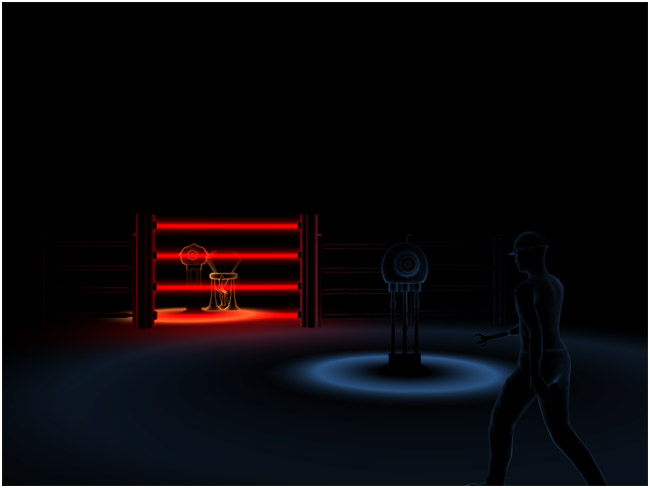

Hi All!
A few weeks ago, our team of 4 students from WPI completed work on our senior project called Blinding Silence. Blinding Silence is a sound based puzzle game where the player takes on the role of a blind man who can 'see' sound. Not only his sight, sound is also a tool that the player can use to influence various actors in the world around him.
The game control scheme uses a pair of wii-remotes: one is paired with a nun-chuck and sensor bar to control the player's cane and movement, while the other is used for simple optical head tracking. We have also provided the initial version of a keyboard and mouse control scheme so that anyone can play it (which is available at our website).
You may remember the beginnings of this from a post back in September. We eventually did find a way to achieve that shell effect using only point lights and some shaders.
You can find out more information at our website here, where you can also download the current version. We are planning to refine the game over the summer for submission to IGF, so any thoughts or suggestions are certainly appreciated!
-Elliot